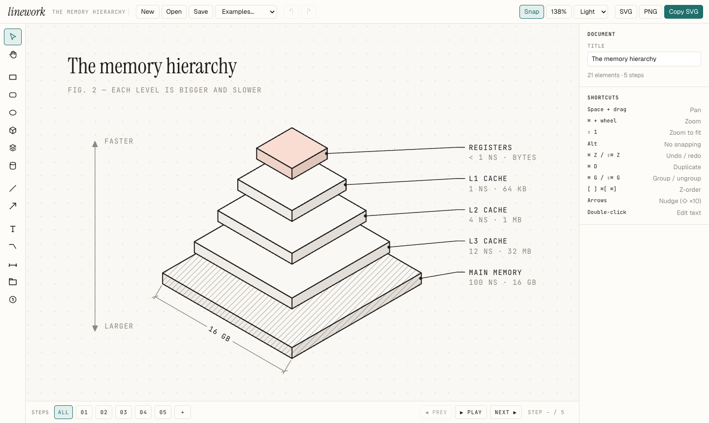
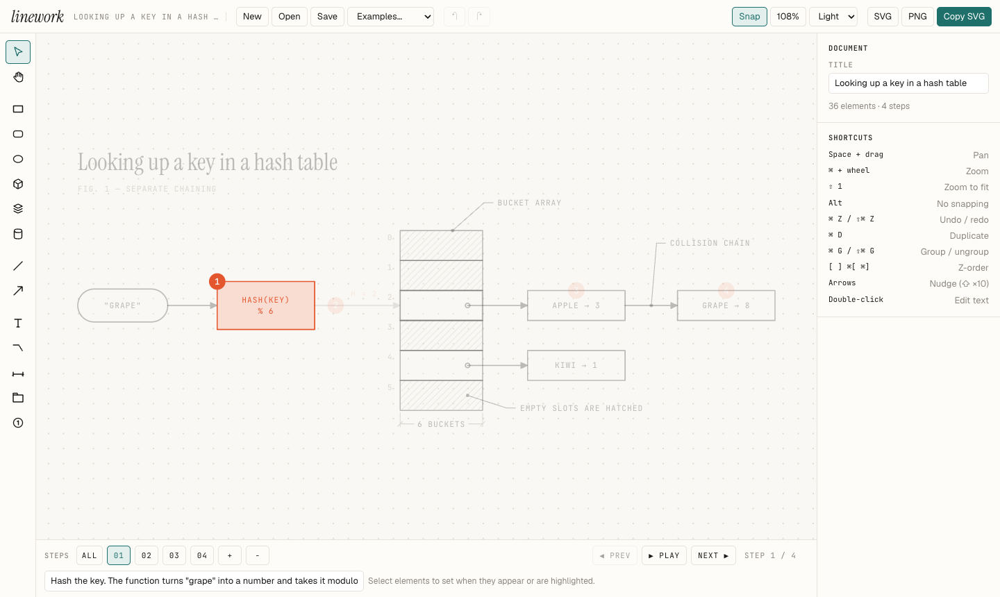
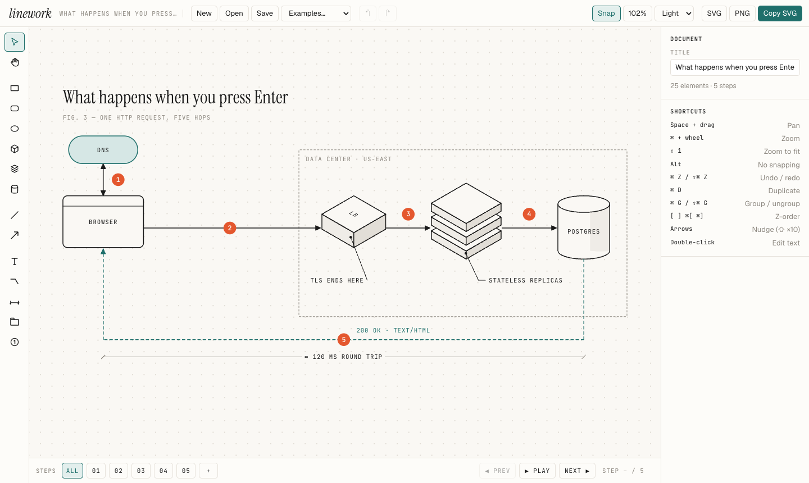
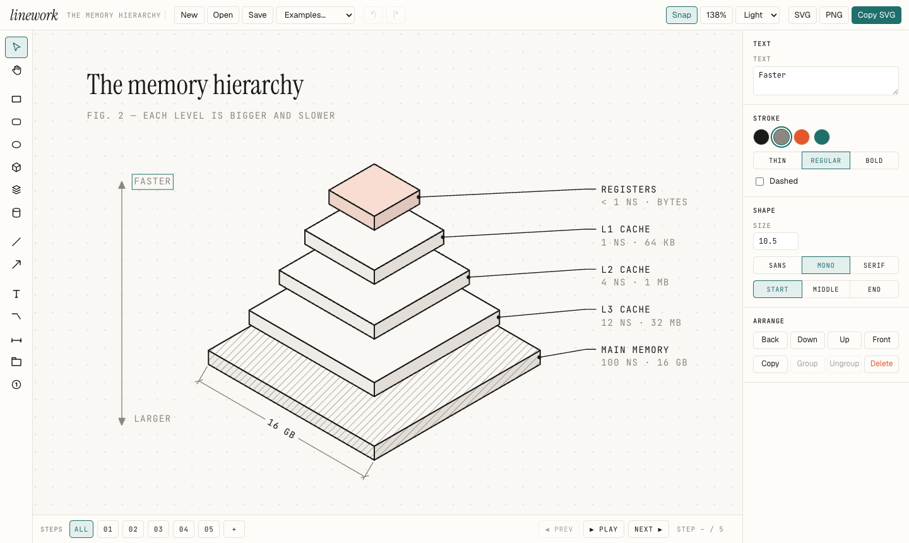
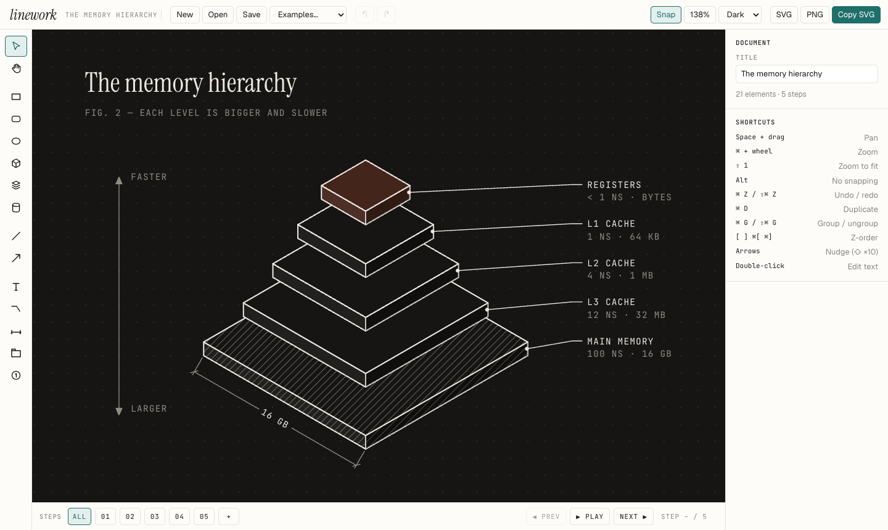

Thin even lines, warm paper, one accent color, mono labels with leader lines, isometric boxes and dimension lines. A drawing can have steps, so a reader goes through an algorithm one move at a time.

Each element can appear, disappear or turn to the accent color at a step. Select a step.

1 / 4Hash the key. The function turns "grape" into a number and takes it modulo the bucket count.


Rectangles, ellipses, isometric boxes and stacks, cylinders, lines and arrows, text, callouts, dimensions, frames and numbered badges. Snap, align, group, undo. Export SVG or PNG for the current step and theme.
Save a drawing as JSON in the editor, then render it with @maskmanlucifer/linework: an SVG renderer with no dependencies, and React components with step controls.
import { DiagramPlayer } from '@maskmanlucifer/linework/react';
import doc from './hash-table.json';
<DiagramPlayer doc={doc} interval={2000} />
